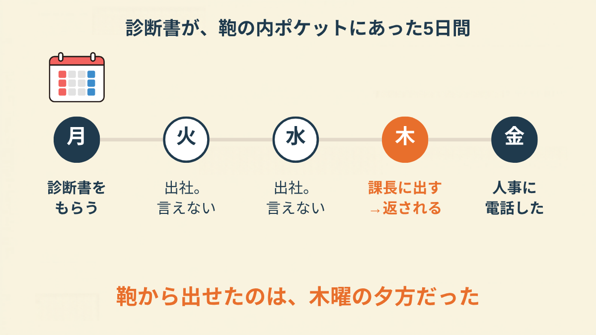
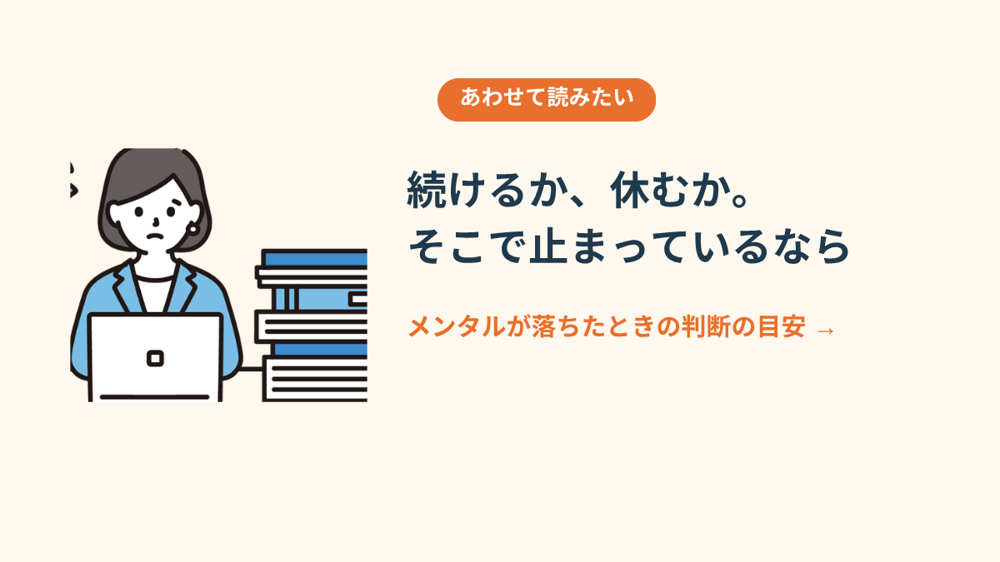
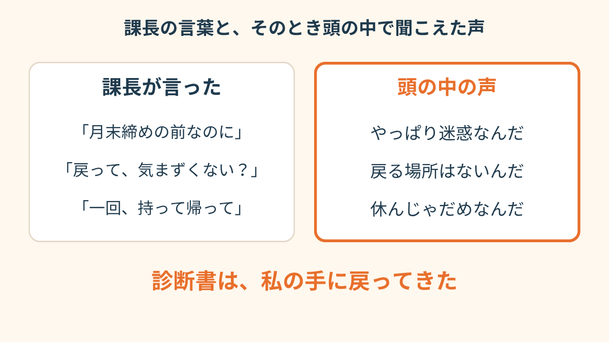
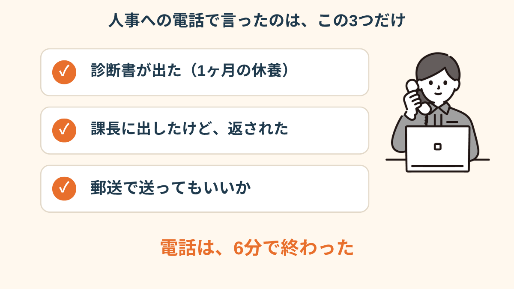
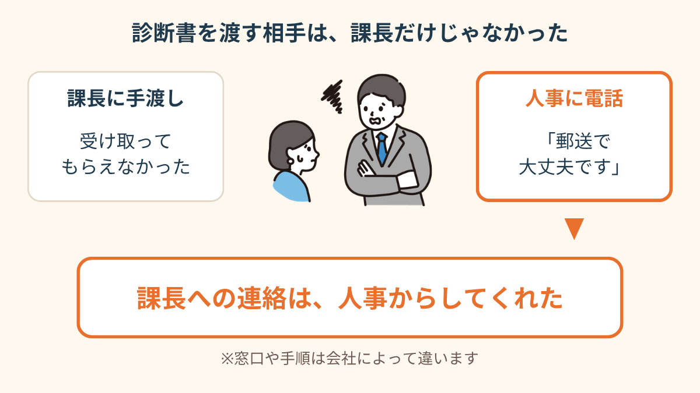
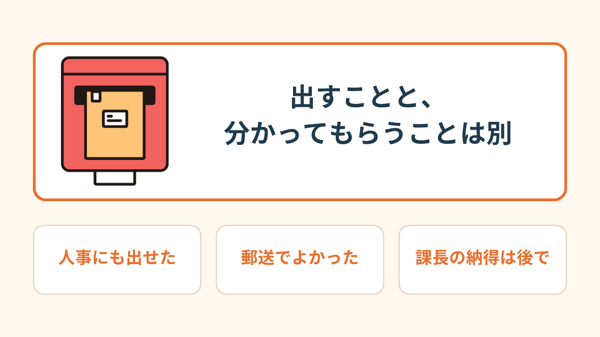

課長はそう言って、私が出した封筒を、机の上でこちらへ少し押し戻した。中身は、月曜にもらった診断書。「1ヶ月の自宅療養を要する」と書いてある。それを出すまでに、私は3日間、普通に出社していた。
月曜にもらった紙が、鞄から出てこない
月曜の夕方、仕事を早めに切り上げて心療内科に行った。先生は私の話を15分くらい聞いて、「今の状態だと、休んだほうがいいと思います」と言った。その場で診断書を書いてくれた。
会計で2,000円ちょっと払って、白い封筒を受け取った。帰りの電車で、それを鞄の内ポケットに入れた。ファスナーを閉めて、上から一回、手で押さえた。
火曜の朝、いつもの電車に乗った。会社に着いて、パソコンをつけて、メールを開いた。課長の席は、私の席から斜め前に4つ。朝礼のあとに言おうと思った。言わなかった。
理由は、口に出すと情けないくらい小さい。月末の締めが金曜にある。経理の私が抜けたら、隣の先輩の仕事が倍になる。それに、「休むほどじゃないでしょ」と言われたら、もう立っていられない気がした。
水曜も同じだった。昼休みにトイレの個室で封筒を出して、また戻した。内ポケットのファスナーの音だけ、なぜかやけに覚えている。

「僕は診断書もらってから2週間、出せなかったです。毎朝『今日こそ』って思って、駅のホームで気持ち悪くなって、それでも会社には行けちゃうんですよ。行けちゃうから、まだ大丈夫なのかもって。全然大丈夫じゃなかったんですけど」
正直に言うと、休むかどうか自体、私はその診察室に入るまで1ヶ月くらい迷っていた。迷っているうちに、朝、玄関で靴がはけなくなっていた。

「続けるか・休むか」で止まっていた頃の私に読ませたい話 →「いきなり言われてもなあ」
木曜の17時半。課長が会議室から一人で出てくるのが見えて、「少しいいですか」と声をかけた。声が裏返った。
空いていた小会議室で、封筒を出した。「すみません、これ……」としか言えなかった。課長は中を読んで、しばらく黙って、それから言った。
「月末締めの前なのに、いきなり言われてもなあ」
「1ヶ月休んで戻ってきて、気まずくない？」
「とりあえず、一回持って帰って考えてみて」
怒鳴られたわけじゃない。課長の声は、むしろ困っていた。でも私の頭の中では、全部が別の言葉に変換されていた。

「はい、すみません」と言って、封筒を受け取った。受け取ってしまった。席に戻ってパソコンを閉じて、誰にも挨拶しないで帰った。
その夜は、鞄を玄関に置いたまま、一度も開けなかった。
「私も上司に『今は困る』って言われました。で、私のほうから『じゃあ来月からで』って言っちゃったんです。来月まで、持たなかったです。月の途中で朝起き上がれなくなって、結局そこからでした。最初から言われた通り休めばよかったって、今でも思います」
金曜の朝、人事に電話した
金曜の朝、目覚ましが鳴って、体が起きなかった。起きなかったというより、起き上がる理由がひとつも浮かばなかった。
8時50分。休みの連絡はしなきゃいけない。でも課長にかける気には、どうしてもなれなかった。スマホの連絡先をスクロールして、入社のときに登録したきりの「人事部」で指が止まった。

電話に出た人事の女性は、私の名前を聞くと「どうされました」とだけ言った。私が言ったのは、3つだけだった。

返事は、拍子抜けするくらい事務的だった。「診断書は人事で受け取ります。郵送で大丈夫です。課長には、こちらから共有しておきますね」
電話は6分で終わった。3日間、内ポケットに入れて持ち歩いていたのは、なんだったんだろう。

午後、診断書のコピーを近所のコンビニで1枚とってから、郵便局まで歩いた。宛名の「人事部御中」を書く字が、少し震えた。
月曜の昼、課長からメールが来た。「人事から聞きました。木曜はちゃんと聞けなくてごめん。締めは何とかするので、まずは休んでください」
読んで、少し泣いた。課長が分かってくれたから、ではなかったと思う。もう、分かってもらえなくてもよかったから、だと思う。出すことと、分かってもらうことは、別のことだった。

休職が始まったあと、いつか「戻るか辞めるか」で迷う日が来たら。そのときに読んでほしい話も書きました。
 休職のあと、就労移行支援の「見学」だけ行った人の話 →
休職のあと、就労移行支援の「見学」だけ行った人の話 →
この記事に、聞いてみたいことはありますか？
「自分の場合はどうなんだろう」と思ったことを、気軽に書いてみてください。いただいた質問は個別にお返事したうえで、匿名で記事にすることがあります。